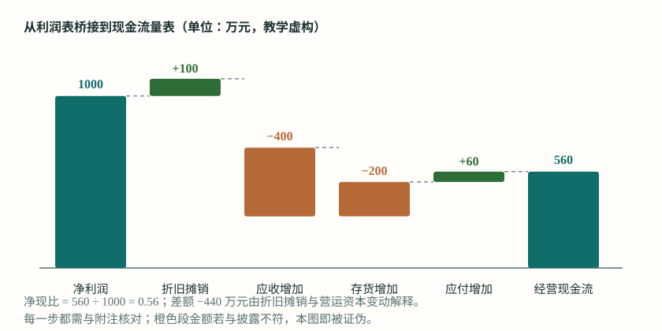

现金流质量：净利润与现金的差距
净利润是权责发生制的结果，经营现金流是收付实现制的结果。两者差额主要来自营运资本变动，但差额本身不能单独定案：它既可能提示回款问题，也可能来自正常备货或结算周期。
利润与现金的差额从哪里来
沿用一组教学虚构数据：某公司当期归母净利润 1,000 万元，经营活动产生的现金流量净额 560 万元。两个数字都不假，但差额 440 万元需要有具体解释。把差额拆成利润表与资产负债表之间的桥接项，就能看到它去了哪里：

桥接关系本身就是一张“对账表”：折旧摊销、应收应付存货的变动、公允价值变动、股份支付、减值准备等项目都能在附注或现金流量表补充资料中找到对应金额。因此现金流质量分析的第一步不是算比率，而是先把净利润到经营现金流的每一步对上。
需要提醒的是，差额方向并不自带善恶：应收增加可能是放宽信用抢占市场，也可能是回款失控；存货增加可能是为下一季度订单备货，也可能是卖不动。把差额拆到具体科目、再与业务说明对照，才可能区分。
三个比率的分子分母
比率本身简单，难的是口径。下面三个指标都必须写清分子、分母和期间，否则同一家公司可以算出好几个不同结果。
- 净利润的口径：合并现金流量表包含子公司全部现金收支，而“净利润”可能指归母净利润。两者口径不一致时比率会失真，必须写明用的是哪一个（或有披露少数股东损益）。
- 收现比：分子是“销售商品、提供劳务收到的现金”，分母是利润表营业收入。增值税属于价外税，收入不含税而收现含税，因此该比率长期高于 1 并不自动意味着异常；应收账款票据背书、保理与贴现都会影响它。
- 资本性支出的口径：通常取“购建固定资产、无形资产和其他长期资产支付的现金”。它不包含并购支出，也不包含经营租赁付款，因此重资产、重研发或靠租赁经营的公司之间不可直接比较。
- 多期与同业：单一年份的比率受季节性与大额单项交易影响很大，至少看 3–5 年序列，并与业务模式相近的公司比较。
“现金流无法造假”是错的：现金流与银行流水相互印证，虚构难度确实更大，但分类与归集可以被安排——同一笔资金可以在经营、投资、筹资三个部分之间选择不同的披需位置。因此正确的做法不是把 CFO 当作免检凭证，而是检查它的构成与后续代价。
现金流质量工作台
数据为教学虚构，单位均为万元，与图 1 一致。启用脚本后实时更新；未启用脚本时可按下列公式手工复算：经营现金流 = 净利润 + 折旧摊销 − 应收增加 − 存货增加 + 应付增加；净现比 = 经营现金流 ÷ 净利润；自由现金流 = 经营现金流 − 资本性支出；收现比 = 销售收现 ÷ 营业收入。
修改数据，即时复算
金额增项填正数、减项也填正数，脚本按标号方向处理；填写口径必须一致。
把“应收账款增加”从 400 改为 100，其余不变：经营现金流从 560 升到 860 万元，净现比从 0.56 升到 0.86。注意这只是重算，不是事实——它说明净现比对这个单项高度敏感，因此差异必须回附注找证据。
现金流可以被安排
现金收支已经发生，但“什么时候流入哪个项目”以及“放在经营、投资还是筹资”并不是完全自然给定的。以下几种做法能在当期抬高经营现金流，同时把代价推到未来：
- 票据贴现：将未到期的应收票据提前贴现，现金提前到账，财务费用增加，后续期间不再有该笔回款。
- 保理与资产证券化：将应收账款转让取得现金。若保留了追索权或继续涉入，风险与报酬并未完全转移，不能当作真正的回款。
- 关联方经营性往来：通过关联方的采购、预收或借支抬高“收到其他与经营活动有关的现金”，需逐笔核对明细与商业实质。
- 延长应付账期或反向保理：占用供应商资金提升当期经营现金流，但会抬高供应链风险与供应商关系成本。
- 分类位置迁移：把本应归入经营活动的支出归入投资活动，从而抬高经营现金流，需与历史口径对比才能发现。
要看的附注：现金流量表补充资料（净利润调节表）、应收款项融资、应收票据贴现未到期金额、保理与资产证券化披露、其他与经营活动有关的现金明细、以及财务费用中贴现息的金额。这些项目同一期变动方向不一致时，优先怀疑分类与时点，而非直接下结论。
观察矩阵与自测
下表把常见现象写成四列：比例的水平本身不是结论，同一水平在不同业务模式下可以有不同解释。
| 观察到的现象 | 可能的含义 | 反例或替代解释 | 需核对的证据 |
|---|---|---|---|
| 净现比持续低于 0.5 | 收入未形成回款，现金被营运资本占用 | 行业处于扩张期，应收账期天然较长；或净利润中含大额非现金收益 | 应收账龄、信用政策、补充资料调节表 |
| 净现比突然升至 1.5 以上 | 回款加速或减值导致净利润基数偏低 | 某期计提大额减值、或大客户集中回款 | 减值计提明细、季度 CFO 走势 |
| 收现比高于 1 | 收现含增值税，或存在预收 | 增值税价外税造成结构性偏高 | 税率、预收款余额、票据背书 |
| 自由现金流长期为负而利润为正 | 资本开支强度高，或收入未形成现金 | 成长期重资产扩张、在建工程集中投入 | 在建工程与产能规划、项目回收期 |
| 经营现金流改善而财务费用上升 | 可能来自票据贴现或保理 | 融资规模扩大也会抬高利息 | 贴现金额与利率、有息负债余额 |
自测一：现金流量表为正，可以不再看利潦表吗？
不行。两者是不同计量基础的结果，需要相互对应。经营现金流为正而利润长期为负，可能是在消耗前期预收、压缩库存或拖延付款；这类“好看”难以持续。
自测二：一家公司 CFO 连续三年为负，一定是坏事吗？
不一定。高速扩张的公司会把现金投入库存与应收，甚至预付款备货；判断标准是这些投入能否在后续期间转化为回款与利润，而不是单看符号。反过来，持续为负且伴随应付账龄延长与或有负债增加，风险信号更强。
结论：现金流质量分析的交付物是“利润与现金的差额逐项拆解 + 哪些差额能持续”。把差额拆到目级科目，比给出一句“利润含金量高”有用得多。
依据与边界
本页所有公司描述与金额均为教学虚构，仅用于演示公式与口径；不对应任何实际上市公司或报告期，不构成投资建议。
“净现比”“收现比”“FCF”是分析者自行定义的派生指标，不同机构口径可能不同；会计分类与披需要求以下列官方文件为准。